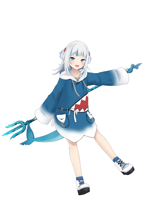

Kizuna Ai
- A Japanese VTuber who debuted on November 29, 2016
- The first VTuber using the phrase "Virtual YouTuber"
- Her YouTube channel having over 3 million subscribers
- Has stopped her activities after a farewell concert on February 26,2022 Kizuna Ai's YouTuber Channel

Gawr Gura
- An English VTuber who debuted on Septmber 2020
- She affiliates a Japanese VTuber company Hololive
- She is the most subscribed VTuber with 3.9 million subscribers currently. Gawr Gura's YouTube Channel

Kiryu Coco
- An Japanese Vtuber who debuted on December 28, 2019
- She affiliated a Japanese VTuber company Hololive
- She left Hololive in July 1, 2021
- Her final live stream peaked at 491,342 concurrent viewers, making it the live stream with the largest viewer count in VTuber history
- Made a great contribution to the VTuber culture Kiryu Coco's YouTube Channel